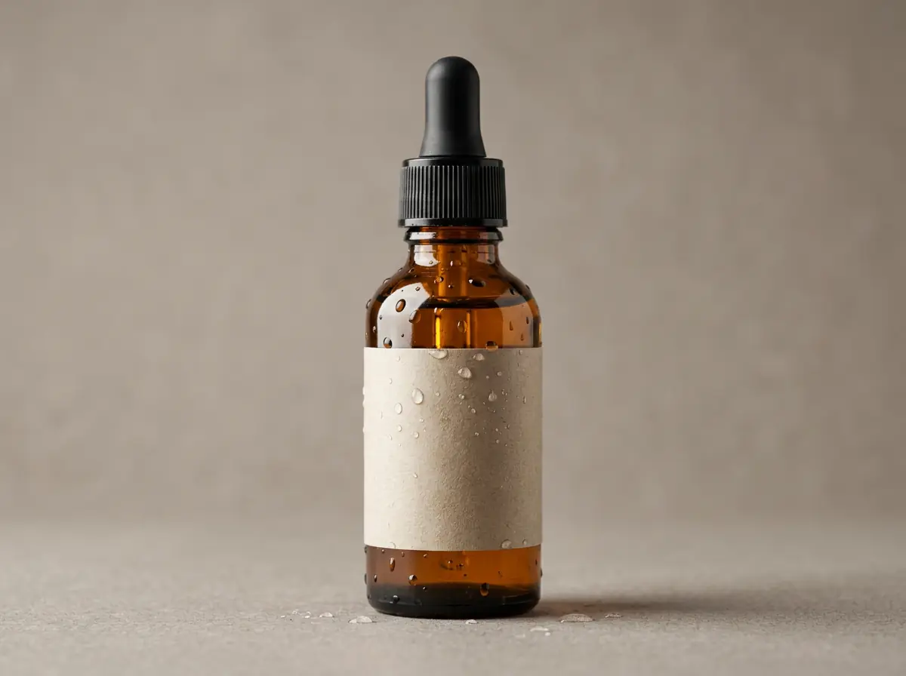
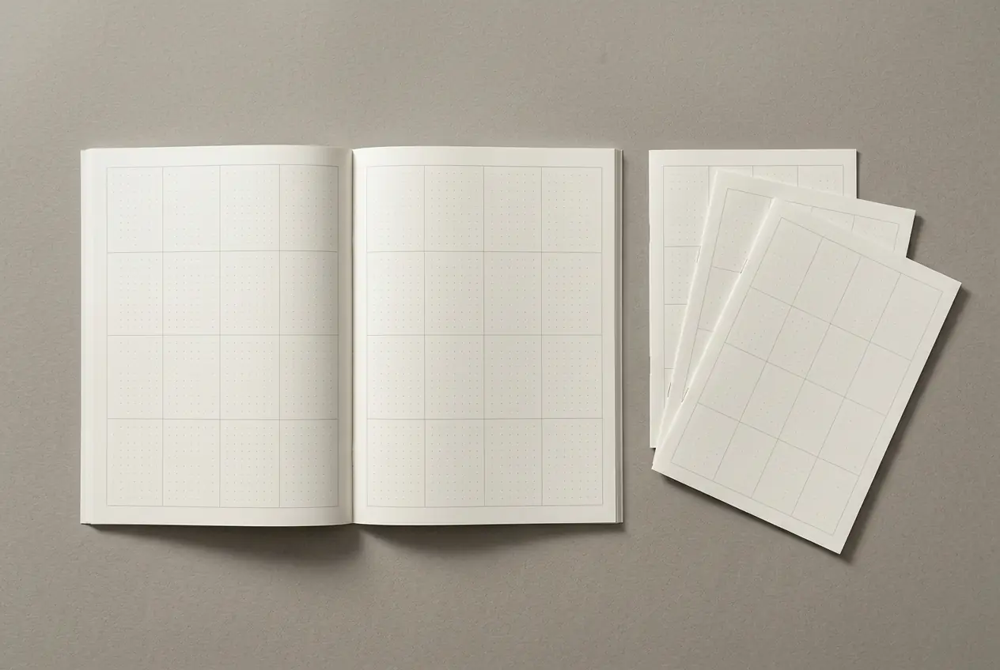

A natural-origin story that still had to read as clinically credible — botanical enough to be believed, disciplined enough not to tip into decoration. Three years later it had earned a sub-brand of its own.
Three leaves, arranged to form the letter T.
Context
Natural Solution sells food supplements and phytotherapy through pharmacies — a category where the natural-origin claim is the reason to buy and simultaneously the reason to doubt.
The catalogue was already broad when the work started, and it kept growing. Any system had to be designed for a product count nobody could predict.
Challenge
Two failure modes sat on either side. Lean too far into botanical and the range reads as health-food and loses the pharmacy. Lean too far into clinical and the natural-origin claim — the whole proposition — disappears.
Underneath that, a scale problem: thirty-odd products need to look related without looking identical, or a customer cannot find the one they were sent in for.
Role
Creative direction across the identity and the packaging direction for the full catalogue, plus the promotional and presentation templates the brand's own team would use between projects.
Approach
The mark is three leaves arranged to form the letter T — botanical content, typographic discipline. The argument is settled inside the logo, which is what lets everything downstream stop arguing about it.
The colour rule does the rest of the work: deep ocean blue against yellow-green, and the green is never allowed to stand alone. One sentence, and it is what keeps the range out of health-food territory across every product added since.
Six logo formats were drawn up front — horizontal, vertical, compact, social, print, simplified — because a mark that has to sit on a jar lid, a pharmacy shelf and a phone screen is really three marks. Drawing them all is what stopped the brand improvising them later.
Extension
After three years the partnership produced a sub-brand: Natural Skin, a branch of Natural Solution rather than a departure from it.
That is the clearest evidence a system is working. A sub-brand is only worth creating when the parent has enough recognition to lend, and only possible when the original rules were written loosely enough to extend and tightly enough to still mean something. Natural Skin inherits the family — it did not have to start again.
Six formats — horizontal, vertical, compact, social, print, simplified. A mark that appears on a jar lid, a pharmacy shelf and a phone screen is really three marks; drawing all six up front stopped the brand improvising them later.
Gilroy — humanist enough to carry the botanical claim, geometric enough to hold the clinical one.
Deep ocean blue against yellow-green, and the green is never allowed to stand alone. That single rule is what keeps the range out of health-food territory.
Direction across a catalogue that grew past thirty products without the system being redrawn once.
A sub-brand, born in year three out of the parent brand rather than beside it — the extension the identity was built loosely enough to allow.
Promotional and presentation templates, so three years of output stayed recognisably one brand.



A flexible identity built to scale alongside the brand’s expanding catalogue — and it has, for three years, far enough to carry a sub-brand of its own.
A short verified quote from Natural Solution, tied specifically to this project, belongs here. Left empty until it is supplied and cleared.